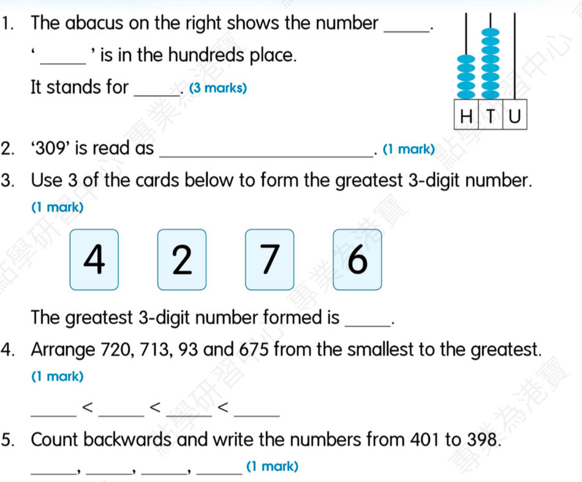

Write about a pet in about 40 words. Include the animal, colour/look, what it can/cannot do, what it likes eating, and your opinion.
Answer:
已掌握
| # | 中文意思 | 例句/提示 | 英文默写 | 已掌握 |
|---|---|---|---|---|
| noun 名词 | ||||
| 1 | 教堂 | The old is quiet. | ||
| 2 | 皮毛 | The rabbit has soft . | ||
| 3 | 音乐 | I can use in class. | ||
| 4 | 周一 | I can use in class. | ||
| 5 | 顺序 | Please put them in . | ||
| 6 | 角色 | I have a in the play. | ||
| verb 动词 | ||||
| 7 | 感觉 | I happy today. | ||
| 8 | 绘画 | I a picture. | ||
| noun phrase 名词短语 | ||||
| 9 | 小学生 | I am a . | ||
| adjective 形容词 | ||||
| 10 | 硬的；困难的 | This question is . | ||
| 11 | 感到无聊的 | I feel on rainy days. | ||
| 12 | 不爱干净的 | I can use in class. | ||
| 13 | 懒惰的 | I can use in class. | ||
| 14 | 美丽的 | The flower is . | ||
| 15 | 困难 | This question is . | ||
| verb phrase 动词短语 | ||||
| 16 | 去博物馆 | We with our teacher. | ||
| uncategorized 未分类 | ||||
| 17 | 楼层 | I can use in class. | ||
| 18 | 赢得 | I can use in class. | ||
| 19 | 信息 | I can use in class. | ||
| 20 | 铁路 | I can use in class. | ||
| # | 单词/词组 | 中文意思 | 例句/说明 | 已掌握 |
|---|---|---|---|---|
| noun 名词 | ||||
| 1 | leader | The leader helps the group. | ||
| 2 | genie | The genie grants a wish. | ||
| 3 | court | We play on the court. | ||
| 4 | venue | The venue is near our school. | ||
| 5 | stadium | The game is in the stadium. | ||
| 6 | badminton | I play badminton with my friend. | ||
| 7 | musical | I can use musical in class. | ||
| 8 | fable | The fable has a lesson. | ||
| 9 | kind | A dog is a kind of animal. | ||
| 10 | event | This event is fun. | ||
| 11 | piece | I want one piece of paper. | ||
| 12 | costume | I wear a costume at the festival. | ||
| verb 动词 | ||||
| 13 | describe | I can describe the picture. | ||
| 14 | chase | The dog may chase the ball. | ||
| phrase 短语 | ||||
| 15 | Hong Kong Island | I can use Hong Kong Island in class. | ||
| uncategorized 未分类 | ||||
| 16 | passage | I can use passage in class. | ||
| 17 | corresponding | I can use corresponding in class. | ||
| 18 | False | I can use False in class. | ||
| 19 | remember | I can use remember in class. | ||
| 20 | adjectives | I can use adjectives in class. | ||
| 21 | structure | I can use structure in class. | ||
| 22 | thief | I can use thief in class. | ||
| 23 | model | I can use model in class. | ||
| 24 | organic | I can use organic in class. | ||
| 25 | royal | I can use royal in class. | ||
| 26 | plain | I can use plain in class. | ||
| 27 | staff | I can use staff in class. | ||
| 28 | bingo | I can use bingo in class. | ||
| 29 | illustrate | I can use illustrate in class. | ||
| 30 | lantern | I can use lantern in class. | ||
| # | 中文意思 | 例句/提示 | 英文默写 | 已掌握 |
|---|---|---|---|---|
| time/date 时间日期 | ||||
| 1 | 二月 | is the second month. | ||
| 2 | 七月 | is the seventh month. | ||
| 3 | 九月 | is the ninth month. | ||
| 4 | 十一月 | is the eleventh month. | ||
| 5 | 星期四 | is a weekday. | ||
| 6 | 星期日 | is a weekend day. | ||
| time unit 时间单位 | ||||
| 7 | 月 | A has many days. | ||
| 8 | 日 | A has 24 hours. | ||
| 9 | 分 | A has 60 seconds. | ||
| directions 方向 | ||||
| 10 | 西 | The sun sets in the . | ||
| numbers 数字 | ||||
| 11 | 70 | is 70. | ||
| 12 | 90 | is 90. | ||
| ordinal numbers 序数 | ||||
| 13 | 第二 | This is the shape. | ||
| solid shape 立体图形 | ||||
| 14 | 五棱锥 | A has pentagonal faces. | ||
| 15 | 圆柱 | A has two circular faces. | ||
| # | 单词/词组 | 中文意思 | 例句/说明 | 已掌握 |
|---|---|---|---|---|
| operations 运算 | ||||
| 1 | addition | Addition means putting numbers together. | ||
| geometry 几何 | ||||
| 2 | curve | Draw a curve. | ||
| 3 | opposite side | The opposite sides are equal. | ||
| 4 | adjacent side | These are adjacent sides. | ||
| directions 方向 | ||||
| 5 | direction | Direction tells us where to go. | ||
| question word 题目词 | ||||
| 6 | calculate | Calculate the answer. | ||
| 7 | estimate | Estimate the answer first. | ||
| 8 | count | Count from 1 to 10. | ||
| 9 | match | Match the number to the word. | ||
| 10 | respectively | Tom and Ben have 2 and 3 books respectively. | ||
| answer 答案 | ||||
| 11 | result | Check the result after you calculate. | ||
| place value 位值 | ||||
| 12 | tens | The digit is in the tens place. | ||
| comparison 比较 | ||||
| 13 | fewer | There are fewer apples in this box. | ||
| 14 | fewest | Which group has the fewest? | ||
| time/date 时间日期 | ||||
| 15 | leap year | A leap year has 366 days. | ||
| position 位置 | ||||
| 16 | back | The desk is at the back of the room. | ||
| 17 | above | The clock is above the board. | ||
| operations calculation 运算 | ||||
| 18 | difference | The difference is the answer in subtraction. | ||
| 19 | product | The product is the answer in multiplication. | ||
| 20 | mixed operations | Mixed operations use more than one operation. | ||
| teacher math vocabulary 老师数学词汇 | ||||
| 21 | stop | I can read stop in a math question. | ||
| currency money 货币 | ||||
| 22 | note | This is a five-dollar note. | ||
| 23 | change | Count the change after paying. | ||
| measurement 测量 | ||||
| 24 | measure | We measure the length with a ruler. | ||
| 25 | distance | Find the distance between the two points. | ||
| 26 | height | Measure the height of the box. | ||
| position order 位置和顺序 | ||||
| 27 | following | Answer the following questions. | ||
| data charts 统计图 | ||||
| 28 | block chart | Read the block chart. | ||
| 句型结构 | ||||
| 29 | Angle ... is larger than Angle ... | Angle A is larger than Angle B. | ||
| 30 | ... is to the south of ... | The library is to the south of the shop. | ||


